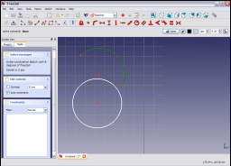
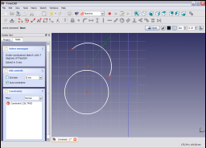

|
| Umístění Menu |
|---|
| Sketch → Sketcher constraints → Constrain radius |
| Pracovní stoly |
| Náčrt, Návrh dílu |
| Výchozí zástupce |
| Nikdo |
| Viz také |
| Vazba délky, Vazba vodorovnosti, Vazba svislosti |
Contents |
Popis
Tato vazba nastavuje hodnotu poloměru kružnice nebo oblouku na zadanou hodnotu. Najednou může být nastavena hodnota pouze pro jednu kružnici nebo jeden obklouk.
Postup

Kliknutím vyberte oblouk nebo kružnici v náčrtu ( vybraná položka bude mít tmavězelenou barvu).

Aplikujte vazbu kliknutím na ikonu vazby poloměru  v nástrojovém pruhu Náčrtu nebo výběrem položky Vazba poloměru v submenu Vazby náčrtu v menu Náčrtu (nebo Návrhu dílu, závisí ve které pracovní ploše jste - Náčrt nebo Navrh dílu).
v nástrojovém pruhu Náčrtu nebo výběrem položky Vazba poloměru v submenu Vazby náčrtu v menu Náčrtu (nebo Návrhu dílu, závisí ve které pracovní ploše jste - Náčrt nebo Navrh dílu).

Poloměr je zafixován na aktuální hodnotu poloměru.
Hodnotu nastavení změníte buď dvojklikem na vazbu ve 3D zobrazení (změna barvy na červenou indikuje, že vazba je vybrána) nebo dvojklikem na vazbu v panelu vazeb záložky Nástroje v rozbalovacím pohledu.
Tím zobrazíte vyskakovací dialogové okno.

Zadáte požadovanou hodnotu poloměru do dialogového okna a kliknete na OK a tak nastavíte hodnotu vazby.

Vazba je nastavena na hodnotu zadanou v dialogovém okně.
{kind=link}
{kind=link}
D zobrazení